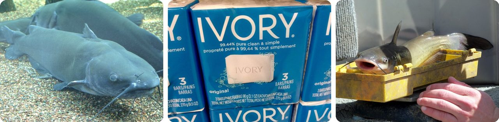
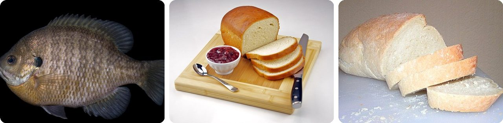
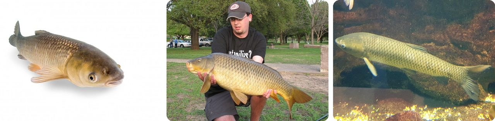
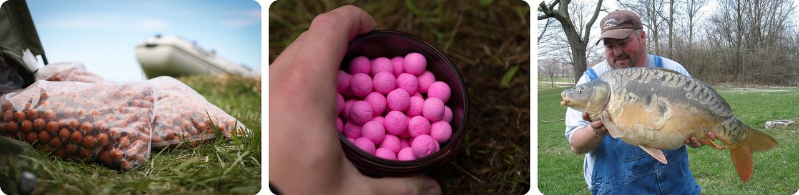
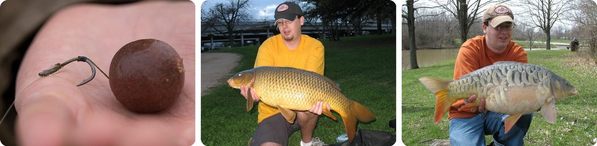
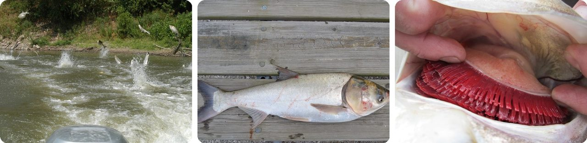
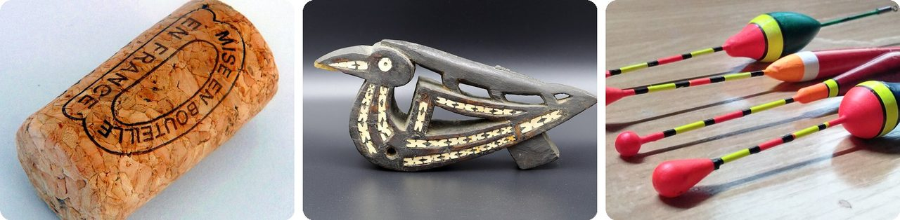
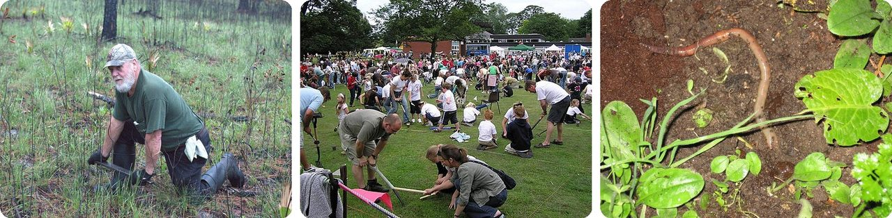
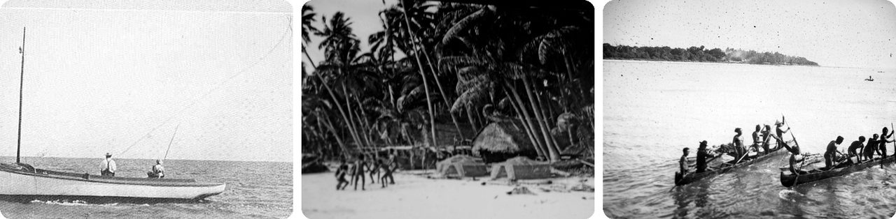
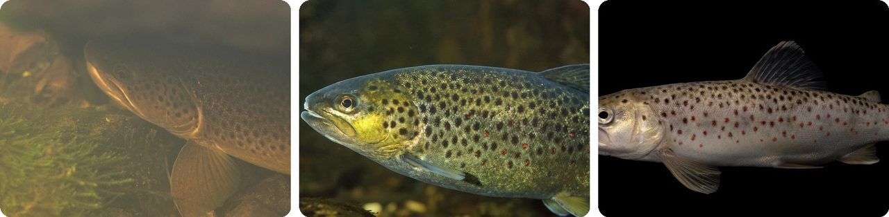

🌍 Top 10 Household Bait and Makeshift Fishing Hacks
Oct 7, 2026
1. 🧼 Catfish will bite a bar of soap

Channel catfish will eat almost anything. Anglers catch them on worms and minnows, but also on straight-from-the-fridge food: chicken liver, raw steak and hot dogs.
And then there's the weird one. Catfish have even been known to take a chunk of Ivory soap as bait.
For catfish traps, people go the other way and use "stink bait": dog food, rotten cheese, or old rotten fish. The smellier, the better.
Basically, a catfish's menu reads like a fridge clean-out.
2. 🇺🇸 Sunfish bite a ball of chewed-up bread

In warm lakes like Florida's, sunfish such as bluegill are so ready to eat that they'll take plain wheat bread from your sandwich bag, or even pet food straight out of the packet.
The trick is how you make it. Pinch off a little bread, wet it (often with spit, sometimes by chewing it), and squeeze it into a ball about the size of a fish's bite. Then press it onto the hook.
No tackle shop needed. Lunch is the bait.
Think of it as sharing your sandwich, with a hook in it.
3. 🌽 Canned corn and cherry tomatoes catch carp

Carp anglers in Europe and the US regularly use sweet corn and bread as bait, right alongside fancy store-bought baits.
Grass carp mostly eat plants and are very wary. Anglers have caught them on canned corn and even cherry tomatoes. Tossing a handful of corn in first, called chumming, gets them feeding and makes a bite more likely.
It's the cheapest bait in the grocery store, and it works.
In other words, you can raid the pantry instead of the bait shop.
4. 🥚 Carp bait is boiled like little dumplings

Boilies are carp bait you can make in a kitchen. You mix fishmeal, milk protein, birdseed, semolina and soy flour, bind it with egg white, roll it into balls, and boil them.
Boiling gives each ball a hard skin. That keeps it on the hook much longer than bread, and smaller fish can't nibble it away. They range from 8 mm to 40 mm, from pea-sized to the size of a golf ball.
Because they're round and hard, anglers can fire them out with a slingshot to land them far across a lake.
So it's a homemade dumpling built to survive underwater.
5. 💇 The trick that fooled wary carp started with a wife's hair

Carp can be very cautious. In tank tests, carp happily ate the loose bait but left the bait with a hook in it alone.
In the 1980s, Len Middleton and Kevin Maddocks tied the bait to the hook with a short strand of hair, so the bait dangled next to a bare hook. Len's own hair was too curly, so they used his wife's. The carp didn't notice the hair, sucked in the bait, and the hook caught in their lips.
It's called the hair rig, and it changed carp fishing. Today the "hair" is usually a thin braided thread.
Basically, the hook hides in plain sight right next to dinner.
6. 🍡 Silver carp get caught by a dough ball with hooks around it

Silver carp are filter feeders. They strain tiny bits of food from the water instead of biting, so a normal baited hook doesn't work.
So anglers hang a big dough ball under a float, surrounded by a nest of tiny bare hooks. The dough slowly breaks apart into a cloud of crumbs.
The carp come to feed on the crumbs, bump into the dough ball, and get snagged on the hooks around it.
Think of it as a crumb cloud with a trap in the middle.
7. 🏴 The first written fishing bobber was a cork and a feather

People probably used twigs, rolled leaves or feather quills to watch for bites long before anyone wrote it down. The first known written mention of a float is in an English book from 1496, Treatyse of fysshynge wyth an Angle, by Juliana Berners.
Her method was pure makeshift: bore a hole through a cork, pass the line through it, and jam it in place with a quill. When a fish takes the bait, the cork dips.
Floats today are made from foam, balsa or plastic, but some are still made from bird or porcupine quills.
In other words, a wine-bottle cork is a 500-year-old fishing tool.
8. 🪱 You can "charm" bait worms out of the ground

Worm charmers vibrate the soil to make earthworms crawl to the surface. One method drives a wooden stake into the ground and rubs it with a metal bar called a rooping iron. Another drags a dull saw across the top of the stake.
Why it works: in 2008, researchers said the vibrations feel like a digging mole, which eats worms, so the worms flee upward.
It's also a sport. At the World Worm Charming Championship in England, 10-year-old Sophie Smith set the record in 2009 by raising 567 worms from a 3-by-3-meter patch.
It's like fishing for your bait before you fish.
9. 🇵🇼 Islanders fish with leaf kites and spider-web lures

Kite fishing hangs a line from a kite so the bait skips along the water's surface, far from shore, without a boat. When a fish grabs it, the kite drops, and you know you've got a bite.
On Tobi Island in the Pacific, people build the kite from one big leaf, stiffened with ribs from coconut palm fronds. The line can be twisted coconut fiber, and the lure is made of spider web.
Everything in that rig came from the island itself.
So it's a fishing rod made of a leaf, a coconut and a spider.
10. ✋ Trout tickling catches fish with no gear at all

A trout tickler slides a hand under a rock where a trout is resting and gently strokes its belly with a finger. Done right, the trout goes into a kind of trance after about a minute, and the tickler grabs it.
It's old enough that Shakespeare mentioned it in Twelfth Night. Poachers loved it during the 1930s Great Depression because they had no rod or net to get caught with. It's now illegal in most situations in Britain.
The American cousin is noodling: you stick your hand into a catfish's underwater nest hole and let the catfish bite your hand, then pull it out.
It's fishing where your own hand is the bait.
Fun fact
People aren't the only worm charmers. Birds like lapwings, gulls and American woodcocks tap the ground with their feet to make worms come up, a move nicknamed the "seagull dance." Wood turtles seem to do it too, stamping their feet on the soil. Plenty of animals have sneaky hunting tricks like these: next time, the cleverest hunting tricks in the animal world.
Photo credits (Wikimedia Commons)
- #1: Channel Catfish (flickr) by Ryan Somma, CC BY-SA 2.0
- #1: Ivory Soap (flickr) by JeepersMedia, CC BY 2.0
- #1: Channel Catfish (flickr) by USFWS Mountain Prairie, CC BY 2.0
- #2: Bluegill Sunfish (Lepomis macrochirus) (flickr) by USFWS Mountain Prairie, Public domain
- #2: Homemade White Bread with Strawberry Jam.jpg by Evan Swigart from Chicago, USA, CC BY 2.0
- #2: White bread 800.jpg by User Sannse on en.wikipedia, CC BY-SA 3.0
- #3: Grass carp portrait.jpg by Hagerty, Ryan/USFWS, Public domain
- #3: 22lb Common Carp (flickr) by TimJC513, CC BY 2.0
- #3: Hal - Ctenopharyngodon idella - 1.jpg by Emőke Dénes, CC BY-SA 4.0
- #4: Bags of carp boilies ready to go (flickr) by Team Korda, CC BY 2.0
- #4: Pink carp boilies in pot (flickr) by Team Korda, CC BY 2.0
- #4: Mandisa the mirror at 26lb 8oz (flickr) by TimJC513, CC BY 2.0
- #5: Boilie on hair rig (flickr) by Team Korda, CC BY 2.0
- #5: 16lb 8oz Common Carp (flickr) by TimJC513, CC BY 2.0
- #5: Rectangle the mirror at 12lb 8oz (flickr) by TimJC513, CC BY 2.0
- #6: School of Jumping Silver Carp (flickr) by Asian Carp Regional Coordinating Committee, CC BY 2.0
- #6: Silver Carp (flickr) by Asian Carp Regional Coordinating Committee, CC BY 2.0
- #6: Silver carp gill rakers (flickr) by Asian Carp Regional Coordinating Committee, CC BY 2.0
- #7: Cork p1160013.jpg by David Monniaux, CC BY-SA 3.0
- #7: Flotteur de pêche 11-o.lau-F056.LA962.jpg by Simon Pierre Barrette (Cephas (talk)), CC BY-SA 4.0
- #7: Fishing floats.png by User:JrawX, CC0
- #8: Worm Gruntin'.jpg by FolklifeDom, CC BY-SA 4.0
- #8: Willaston - Worm Charming.jpg by Graham Shaw, CC BY-SA 2.0
- #8: Lumbricus terrestris.JPG by Foto: w:de:User:Michael Linnenbach, CC BY-SA 3.0
- #9: FMIB 49399 Leaping Tuna Southern California Islands Taking them with a kite--imitating leap of Flying Fish.jpeg by Reyes, Public domain
- #9: West beach of Tobi Island (1908-1910).jpg by Georg Thilenius, Public domain
- #9: Canoes on Tobi Island (1908-1910).jpg by Georg Thilenius, Public domain
- #10: Brown trout 08.2024.jpg by Jürgen Karvak, CC BY 4.0
- #10: Salmo trutta fario - Truite fario - Brown trout.jpg by Gilles San Martin, CC BY-SA 2.0
- #10: Brown Trout (Salmo trutta).jpg by USFWS Mountain Prairie, Public domain


.jpg){kind=link}
.jpg){kind=link}


.jpg){kind=link}